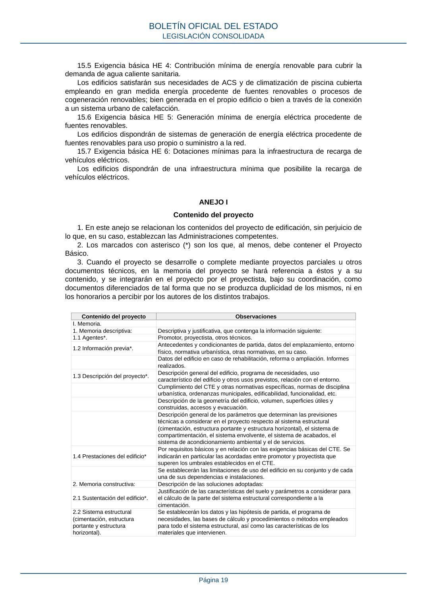

Real Decreto 314/2006: aprobación y Parte I del CTE · edición 2022-06-15 · capa oficial
Documento RD-314-2006-oficial · SHA-256 del PDF 298090e145f5558aceae49702b2ce132fe8fe8671bd87d650217c6a24bdd65ba
Copia fiel del PDF fuente · Fuente oficial
Texto extraído y reorganizado: Basado en datos de la Agencia Estatal Boletín Oficial del Estado. PDF reproducido: Fuente de los datos: Agencia Estatal Boletín Oficial del Estado.
Formatos: JSON del segmento · Markdown
15.5 Exigencia básica HE 4: Contribución mínima de energía renovable para cubrir la demanda de agua caliente sanitaria. demanda de agua caliente sanitaria. Los edificios satisfarán sus necesidades de ACS y de climatización de piscina cubierta empleando en gran medida energía procedente de fuentes renovables o procesos de cogeneración renovables; bien generada en el propio edificio o bien a través de la conexión a un sistema urbano de calefacción.
